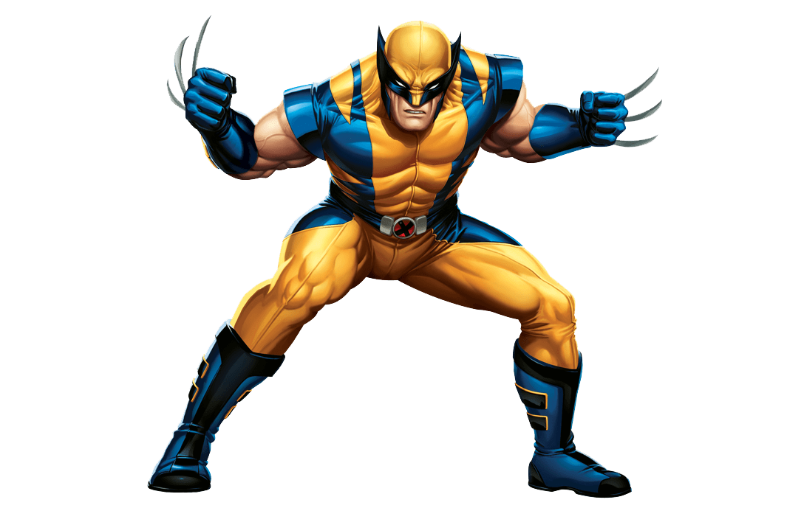

class: center, middle # Zmutowany .NET .footnote[4Developers - 08.11.2022] --- class: center, middle # Disclaimer (a tak naprawdę dwa) ??? - Prezentacja jest przygotowana w remark.js - Jeżeli ktoś wie czym są testy mutacyjne lub z nich korzystał, to nie jest to dla niego --- # Kim ja jestem? .left-column-33[<div> </div>] .left-column-66[<div> <div class="myName">Mikołaj Korbanek</div> <div>Senior Fullstack Developer</div> <div>.NET + React</div> <div>Objectivity</div> <div>Mentor</div> <div>Fotografia</div> </div>] --- # Agenda - Po co są nam testy mutacyjne? - Jak działają testy mutacyjne? - Przykładowe mutacje - Trochę słówek - Demo - Plusy i minusy - Czy warto i kiedy? --- # Mermaid <div class="mermaid"> graph LR A-->B B-->C C-->A D-->C E-->D F-->D C-->G G-->A </div> --- class: center, middle # Quiz .question[Kto słyszał o testach mutacyjnych?] --- class: center, middle # Quiz .question[Kto korzystał z testów mutacyjnych?] --- class: center, middle # Po co są nam testy mutacyjne? ??? Celem Testowania Mutacyjnego jest zapewnienie jakości przypadków testowych. Sprawdzają one czy nasze testy są w stanie wykryć zmiany (mutacje) kodu źródłowego. --- class: center, middle # Jak to się dzieje? ??? Zacznijmy najpierw od tego jakie są rodzaje mutacji, a następnie spróbujemy odpowiedzieć sobie na pytanie czym są mutacje. --- # Przykładowe mutacje - Operatory równości <table class="exampleMutations"> <tr> <th>Oryginał</th> <th>Zmutowany</th> </tr> <tr> <td>></td> <td><</td> </tr> <tr> <td>></td> <td>>=</td> </tr> <tr> <td>>=</td> <td><</td> </tr> <tr> <td>>=</td> <td>></td> </tr> <tr> <td><</td> <td>></td> </tr> <tr> <td><</td> <td><=</td> </tr> <tr> <td><=</td> <td>></td> </tr> <tr> <td><=</td> <td><</td> </tr> <tr> <td>==</td> <td>!=</td> </tr> <tr> <td>!=</td> <td>==</td> </tr> </table> .source[Źródło: https://stryker-mutator.io/docs/stryker-net/mutations/] --- # Przykładowe mutacje - Metody Linq <table class="exampleMutations"> <tr> <th>Oryginał</th> <th>Zmutowany</th> </tr> <tr> <td>SingleOrDefault()</td> <td>Single()</td> </tr> <tr> <td>Single()</td> <td>SingleOrDefault()</td> </tr> <tr> <td>OrderBy()</td> <td>OrderByDescending()</td> </tr> <tr> <td>AsEnumerable()</td> <td>Reverse()</td> </tr> <tr> <td>Any()</td> <td>All()</td> </tr> <tr> <td>Take()</td> <td>Skip()</td> </tr> <tr> <td>...</td> <td>...</td> </tr> </table> .source[Źródło: https://stryker-mutator.io/docs/stryker-net/mutations/] --- # Przykładowe mutacje - Literały (String) <table class="exampleMutations"> <tr> <th>Oryginał</th> <th>Zmutowany</th> </tr> <tr> <td>"foo"</td> <td>""</td> </tr> <tr> <td>""</td> <td>"Stryker was here!"</td> </tr> <tr> <td>$"foo {bar}"</td> <td>$""</td> </tr> <tr> <td>@"foo"</td> <td>@""</td> </tr> <tr> <td>string.Empty</td> <td>"Stryker was here!"</td> </tr> </table> .source[Źródło: https://stryker-mutator.io/docs/stryker-net/mutations/] --- class: center, middle # To zdefinujmy sobie test mutacyjny --- class: center, middle # To zdefinujmy sobie test mutacyjny Mutacje to drobne, ale przemyślane zmiany w kodzie *źródłowym*, które mają sprawdzić czy nasze testy dobrze testują nasz kod. **false-positive** --- class: center, middle # A co z pokryciem kodu? --- class: center, middle # A co z pokryciem kodu? Sprawdzanie pokrycia kodu nie powie Ci wszystkiego o efektywności twoich testów. ??? Wyobraźmy sobie kanapkę z dżemem. Sprawdzanie pokrycia powie Ci, że 80% kanapki jest pokryte dżemem, a test mutacyjne powiedzą Ci, że jest to dżem truskawkowy, a nie brzoskwiniowy… --- class: center, middle # Już prawie live coding Jeszcze tylko musimy sobie wytłumaczyć kilka słówek ??? Nie każdy to lubi, ale pozwoli nam to łatwiej przebrnąć przez demo. --- # Mutant .center[] --- # Mutant Jest to po prostu zmieniona wersja kodu źródłowego. Po przepuszczeniu danych testowych przez mutanta - test powinien nam zwrócić **inne** wyniki niż oryginalny kod źródłowy. --- # Survived Mutants (żywe mutanty) Są to mutanty, które wciąż żyją po uruchomieniu danych testowych przez oryginalne i zmutowane warianty kodu źródłowego. Te muszą zostać zabite. .mutantFailed[**(Test failed)**] .center[<img class="survivedMutant" src="./assets/survivedMutants.gif">] --- # Mutanty zabite Są to mutacje, które są zabijane po testowaniu mutacji. Otrzymujemy je, gdy otrzymujemy różne wyniki z oryginalnych i zmutowanych wersji kodu źródłowego. .mutantSucceed[**(Test succeed)**] --- # Mutanty równoważne Są one ściśle związane z żywymi mutantami, z tym, że, są one "żywe" nawet po uruchomieniu przez nie danych testowych. To, co odróżnia je od innych, to fakt, że mają takie samo znaczenie jak oryginalny kod źródłowy, nawet jeśli mogą mieć inną składnię. Takie mutacje są ignorowane. --- # Wynik mutacji Jest to wynik oparty na liczbie mutantów danego typu: .center[<img src="./assets/mutationScore.png"/>] Naszym celem powinno być osiągnięcie wysokiego wyniku mutacji. ??? Mutacje równoważne nie są brane pod uwagę przy obliczaniu wyniku mutacji. Osiągnięcie 100% powinno być naszym calem, ale nie jest konieczne. To jak z pokryciem kodu. Im więcej tym lepiej, ale realne jest 80-90%. --- class: center, middle # Więc co oznacza, że zabijamy mutanta? ??? Kiedy zmieniamy część programu poprzez testy mutacyjne, tworzymy alternatywną wersję aplikacji, która jest nazywana mutantem. Następnie testy sprawdzają to, a jeśli zestaw testów odrzuca mutanta (co, mamy nadzieję, robi), mówimy, że zabił mutanta. --- class: center, middle # DEMO --- # Plusy i minusy testów mutacyjnych <table class="prosConsTable"> <tr> <th>Plusy</th> <th>Minusy</th> </tr> <tr> <td>Pozwalają znaleźć słabe testy lub kod</td> <td>Ponieważ bazowo są czasochłonne, można śmiało powiedzieć, że te testy nie mogą się odbyć bez odpowiedniej konfiguracji</td> </tr> <tr> <td>Wyniki mutacji mogą dać nam wyobrażenie o tym, jak użyteczne są nasze testy</td> <td>Bycie w zgodzie z takimi testami zajmuje trochę czasu, przez co jest droższe</td> </tr> <tr> <td>Możliwe jest wykrycie błędów, które są problematyczne do znalezienia przez zwykłe testowanie</td> <td>Ponieważ ta metoda zawiera zmiany w kodzie źródłowym, nie może być używana do testowania black-box</td> </tr> </table> --- #Dlaczego warto i kiedy je robić? .summaryCategories[Dlaczego:] - Poprawiają jakość naszego kodu - Możemy (w teorii) ufać naszym testom - Błędy znalezione jeszcze przed wyjściem na produkcję w piątek o 16 .summaryCategories[Kiedy:] - Jako część CI/CD - Jako git hook (przed pushem) - Jako wymaganie przed code review --- class: center, middle # Dziękuję za uwagę! .left-column-33[<div> </div>] .left-column-66[<div> <div class="myName">Mikołaj Korbanek</div> <div class="socials">Twitter: <a href="https://twitter.com/mikolajkorbanek">@mikolajkorbanek</a></div> <div class="socials">LinkedIn: <a href="https://www.linkedin.com/in/mikolaj-korbanek/">@mikolaj-korbanek</a></div> <div class="socials">GitHub: <a href="https://github.com/MikolajKorbanek">@MikolajKorbanek</a></div> <div class="socials">e-Mail: <a href="mailto:mikolaj@korbanek.dev">mikolaj@korbanek.dev</a></div> </div>]